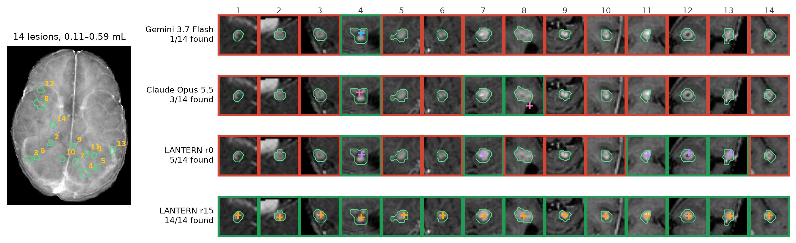

Main-text figure preview: a scan with many small metastases
Draft for review, not yet in the paper. Case 1 of the 3D scan viewer (held-out test scan BraTS-MET-00585-000), where you can scroll through the same scan.

Draft for review, not yet in the paper. Case 1 of the 3D scan viewer (held-out test scan BraTS-MET-00585-000), where you can scroll through the same scan.
